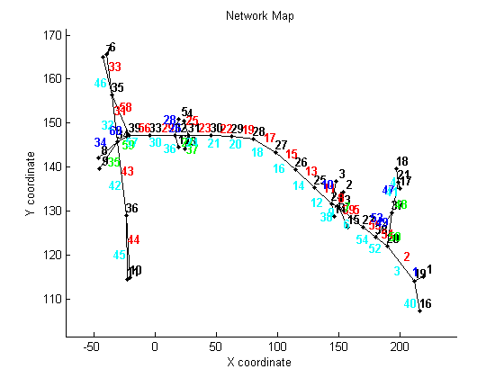
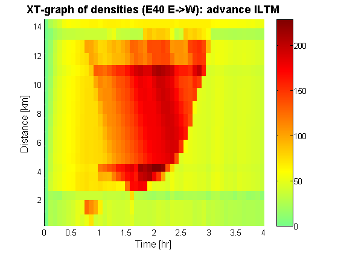
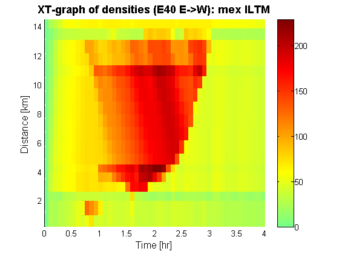

Tutorial 8: Advance algorithms, faster data types and compilation (mex) for the implicit scheme
Contents
- Disclaimer
- Introduction
- Loading the data
- Setup the simulation (for small and large time intervals)
- initilize the Destination Based Split rates
- Compute a multi-commodity Dynamic Network Loading with large time intervals
- Faster computation
- Even faster computation
- Visualize the resulting densities using XT diagrams
- Compute the maximum difference between all solutions
- Closing notes
Disclaimer
This file is part of the matlab package for dynamic traffic assignments developed by the KULeuven.
Copyright (C) 2016 Himpe Willem, Leuven, Belgium
This program is free software: you can redistribute it and/or modify it under the terms of the GNU General Public License as published by the Free Software Foundation, either version 3 of the License, or any later version.
This program is distributed in the hope that it will be useful, but WITHOUT ANY WARRANTY; without even the implied warranty of MERCHANTABILITY or FITNESS FOR A PARTICULAR PURPOSE. See the GNU General Public License for more details.
You should have received a copy of the GNU General Public License along with this program. If not, see http://www.gnu.org/licenses/.
More information at: http://www.mech.kuleuven.be/en/cib/traffic/downloads or contact: willem.himpe {@} kuleuven.be
Introduction
This tutorial introduces faster data types aand compilation techniques for the implicit link transmission model. Additional the jacobi iteration scheme is replaced by a Gauss-Seidel updating of the node updates within a time slice. A node is only updated if its boundary conditions are changed. This leads to scheme with a minimum of redundant computations.
%add these folders to the search path addpath('Dynamic Traffic Assignment','Visualization Tools','Network Data') javaclasspath('Dynamic Traffic Assignment'); %clear the work space clear %clear the command window clc %close all windows close all display('<<<Faster data types and compilation (mex) for the implicit scheme>>>')
<<<Faster data types and compilation (mex) for the implicit scheme>>>
Loading the data
The network represents a simple corridor of network that consists of the interaction of three highways (R0-E40-E314) in the area between Leuven and Brussels in Belgium.
% Network and demand data load net5.mat % Plot the network plotNetwork(nodes,links,true,[]);
Setup the simulation (for small and large time intervals)
Before the simulation can be run the time interval has to be set and the total number of time steps has to be defined. These are used to transform the different origin-destination (OD-) matrices into a 3D-matrix. If the time interval is bound by CFL-conditions the iterative link transmission model reduces to an explicit scheme. If the time interval is larger iterations are required to find a consistent dynamic network loading.
%setup the time interval and total number of time steps dt = 5/60; totT = round(4/dt); %build the full ODmatrix [ODmatrix,origins,destinations] = buildODmatrix(ODmatrices,timeSeries,dt,totT);
initilize the Destination Based Split rates
The destination based split rates are set such that only the shortest path in free flow conditions is used. In this network there is no route choice and it is not required to compute the users respons to delays.
%Compute free flow travel times on each link for every time interval. tt_free = repmat(links.length./links.freeSpeed,1,totT+1); %Compute destination based turning fractions TF = allOrNothingTF(nodes,links,destinations,tt_free,[],dt,totT,10*dt,'last');
Compute a multi-commodity Dynamic Network Loading with large time intervals
First the base implementation of the link transmission model is used to propagate the traffic over the network. This model updates nodes repeatedly until no more changes are observed. All nodes are updates simulateneously, like in Jacobi iterative scheme.
display('Running I-LTM base implementation') %run ILTM tic [cvn_up_d,cvn_down_d] = ILTM_BASE(nodes,links,origins,destinations,ODmatrix,dt,totT,TF); toc
Running I-LTM base implementation average number of iterations: 24.3333 maximum number of iterations: 49 total number of node updates: 25392 Elapsed time is 10.567376 seconds.
Faster computation
Now the advanced implementation of the link transmission model is used to propagate the traffic over the network. This model updates nodes repeatedly until no more changes are observed. All nodes are updates sequentially, like in Gauss-Seidel iterative scheme. If the boundary conditions of a node are unchanged with respect to the previous iteration no update is performend.
fprintf(1,'\n'); display('Running ILTM advanded implementation') %set faster lookup structures load net5_old.mat [links,node_prop] = dataParser(links,nodes,origins,destinations,dt); %set turning fractions faster (based on free flow conditions) TF_f=TF_init(node_prop,links,destinations,dt,totT); %run ILTM tic [cvn_up_df,cvn_down_df] = ILTM(node_prop,links,origins,destinations,ODmatrix,dt,totT,TF_f); toc %cvn values are also in a different form cvn_up_tot=reshape(sum(cvn_up_df,2),[],totT+1); cvn_down_tot=reshape(sum(cvn_down_df,2),[],totT+1);
Running ILTM advanded implementation average number of iterations: 44.7292 maximum number of iterations: 103 total number of node updates: 21061 Elapsed time is 4.456306 seconds.
Even faster computation
Finally the matlab functions are also compiled to machine code (mex-file). This leads to an additional speedup compared to the native matlab code.
fprintf(1,'\n'); display('Running I-LTM mex implementation') %run ILTM tic [cvn_up_dm,cvn_down_dm] = ILTM_cold_mex(node_prop,links,origins,destinations,ODmatrix,dt,totT,TF_f); toc %cvn values are also in a different form cvn_up_totm=reshape(sum(cvn_up_dm,2),[],totT+1); cvn_down_totm=reshape(sum(cvn_down_dm,2),[],totT+1);
Running I-LTM mex implementation Elapsed time is 0.314171 seconds.
Visualize the resulting densities using XT diagrams
Resulting densities and flows are depicted for all three approaches in space-time (or XT) diagrams of the E40 highway from east to west.
%compute the simulated densities & flows [simDensity_d] = cvn2dens(sum(cvn_up_d,3),sum(cvn_down_d,3),totT,links); [simFlows_down_d] = cvn2flows(sum(cvn_down_d,3),dt); [simDensity_df] = cvn2dens(cvn_up_tot,cvn_down_tot,totT,links); [simFlows_down_df] = cvn2flows(cvn_down_tot,dt); [simDensity_dm] = cvn2dens(cvn_up_totm,cvn_down_totm,totT,links); [simFlows_down_dm] = cvn2flows(cvn_down_totm,dt); %Main road route = [1,2,51,55,5,8,11,13,15,17,19,22,23,26,29,56,58,33]; plotXT(links,route,simDensity_d,dt,totT); title('XT-graph of densities (E40 E->W): base ILTM','FontSize',14,'fontweight','b') plotXT(links,route,simDensity_df,dt,totT); title('XT-graph of densities (E40 E->W): advance ILTM','FontSize',14,'fontweight','b') plotXT(links,route,simDensity_dm,dt,totT); title('XT-graph of densities (E40 E->W): mex ILTM','FontSize',14,'fontweight','b') 
Compute the maximum difference between all solutions
The following lines of code compare the output of both models in terms of difference in densities.
fprintf(1,'\n'); display('Comparing I-LTM base & I-LTM') display(['- maximum difference in density: ',num2str(max(max(abs(simDensity_d-simDensity_df)))),' veh/km']); display(['- average difference in density: ',num2str(sum(sum(abs(simDensity_df-simDensity_d)))/sum(sum(simDensity_d))),' veh/km']); fprintf(1,'\n'); display('Comparing I-LTM & I-LTM mex') display(['- maximum difference in density: ',num2str(max(max(abs(simDensity_dm-simDensity_df)))),' veh/km']); display(['- average difference in density: ',num2str(sum(sum(abs(simDensity_df-simDensity_dm)))/sum(sum(simDensity_df))),' veh/km']);
Comparing I-LTM base & I-LTM - maximum difference in density: 4.064e-07 veh/km - average difference in density: 6.7754e-11 veh/km Comparing I-LTM & I-LTM mex - maximum difference in density: 0 veh/km - average difference in density: 0 veh/km
Closing notes
- ITEM1
- ITEM2